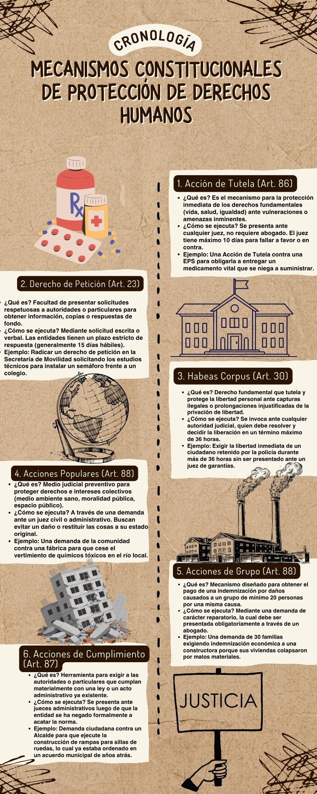

Mecanismos de DDHH
Mecanismos de Protección Constitucional: La explicación de Acción de Tutela, Derecho de Petición, Habeas Corpus, Acciones Populares, Acciones de Grupo y Acciones de Cumplimiento, junto a sus respectivos ejemplos de ejecución, se encuentran ilustrados en la siguiente infografía.

Análisis: La cultura de DDHH en Colombia
Posición: Colombia no está desarrollando bien su cultura de protección de los Derechos Humanos.
Sustentación:
A pesar de que la Constitución de 1991 es catalogada como una de las más garantistas e innovadoras de América Latina en el papel, existe una brecha abismal entre la teoría jurídica y la realidad social de nuestro país. Considerar que Colombia tiene una buena cultura de protección de Derechos Humanos sería ignorar las dinámicas estructurales que aquejan diariamente a la ciudadanía.
En primer lugar, herramientas como la Acción de Tutela o el Derecho de Petición se han convertido en un sustituto de la eficiencia estatal y no en una excepción. El hecho de que un ciudadano deba interponer una tutela para que una EPS le entregue un medicamento oncológico o le programe una cirugía vital demuestra que los derechos fundamentales no se garantizan por convicción institucional, sino por presión judicial.
En segundo lugar, persiste una alarmante vulneración sistemática hacia la vida e integridad de líderes sociales, defensores ambientales y comunitarios en las regiones periféricas del país, donde la presencia del Estado continúa siendo predominantemente militar y no social. La impunidad en las violaciones a los derechos humanos, la persistencia del conflicto armado y la estigmatización de la protesta social evidencian que aún no hemos consolidado una verdadera cultura ciudadana ni institucional basada en el respeto a la dignidad humana. En Colombia, los derechos se litigan y se sufren, no se gozan de manera natural..